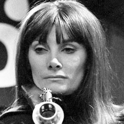

| Home | The Doctors | The Companions | The Villains |
|
|||
|
Jean MarshJean Lyndsey Torren Marsh, OBE (born 1 July 1934) is an English actress and writer. Marsh co-created and starred in the 1971 series Upstairs, Downstairs for which she received several awards including an Emmy Award for Outstanding Lead Actress in a Drama Series for her performance as Rose Buck in 1975. She later reprised her role of Rose for the BBC's revival of the series in 2010. Marsh co-created the television series The House of Eliott in 1991. |